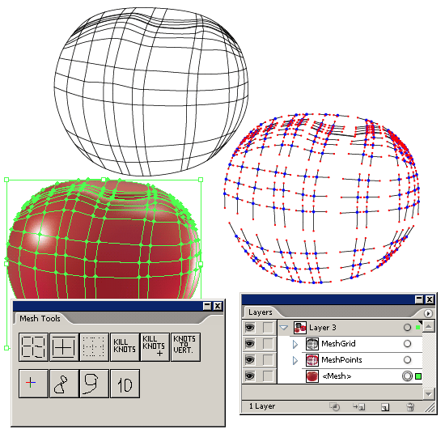

Для любителей помешить
qsedftghk / 07.10.2010, 16:06/00:41
Форум:
Достойный, имхо, плагинчик, наваял человек под ником YemZ.

На данный момент он может создавать двумя способами сетку из кривых, показывать усы узлов мэша и сами узлы, и тремя способами «бороться» с кнотами (невидимыми узлами, о которых я писал в позапрошлой записи).
А впереди самое сложное: мэшерезка и мэшесшивалка
Может кому интересно.
Это клички наши,а имя его Ярослав.
Плагин просто супер-замечательный и ему цены нет для тех кто занимается
меш отрисовкой,только вот в чём беда,не знают про него эти ребята в большинстве своем.
Шило в мешке не утаишь и дождётся дружище Ярослав того, что свиснут у него Adobоцы этот плагин и запустят под своим именем версии так в CS 7,так как попыток застолбить авторство он не принимает.
Видео-инструкция по работе этого плагина
http://*реклама*/forum....1046930
Старый добрый усовершенствованный "меш" :)
Кстати, хоть "никнейм" и переводиться как кличка или прозвище, но по отношению к человеку принято обозначать как "псевдоним"
itt, я лично с ним не знаком, поэтому только ник. Надо же как-то представить человека :ad:.
Плагин феерический, ибо адоба, кол ей в одно место, совершенно не чешется в последнее время и мешу не уделяет положенного внимания. Ну, а Ярославу, лично от меня, только слава во веки веков, даже просто как человеку, осилившему SDK люстры :D
Это правда Ваша,но нам нерусским 50% скидки. :D
Да,это тоже правда и в Action за то время что я мог проследить/начиная с 7.0 версии/ добавлено ничего небыло. :(